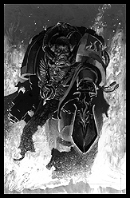
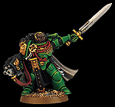

|

The Space Marines of the Salamanders Chapter are some of the most steadfast and respected fighters in the Imperium and their service has never been stained or faulted in the Chapter's long history. The Salamanders are born from fire and constant change. Their homeworld of Nocturne is a tortured planet, constantly being ripped apart by the massive gravity of its larger moon, Prometheus. In the face of this constant destruction, the massive volcanic action and rivers of lava, the Salamanders have survived and gained a stubborn and pragmatic attitude to warfare and life in general. Because of the unstable nature of Nocturne, the Chapter's fortess-monastery is located on the stable, if airless, Prometheus. From here the Chapter Master directs the Salamanders movements and engagements. But contrary to most other Space Marine Chapters, who keep a more aloof attitude about the indigenous people of their home, the Salamanders live, work and help the hardy folk of Nocturne instead of living in mysterious solitude.
The Salamanders maintain and make their own weapons and armor, leaving more time for the Chapter's Techmarines to make astounding artifacts of beauty and flawless functionality. This practice was passed onto the Salamanders by their Primarch, Vulkan, who was raised by a blacksmith. Vulkan taught his sons the virtues of patience and the skills they needed to be fine craftsman.
These green-armored marines differ from normal "Codex" Chapters in other ways as well. Their tortured planet has taught them to never give up. The Salamanders' steadfast determination and tenacity in battle is legendary. They will continue to fight against even the most overhwelming odds to secure their objective or hold an important position. Since these solitary Space Marines live with the people of Nocturne, they have learned to function by themselves if need be. In battle they can continue to fight on, even while separated from the rest of their squad. Because of the high gravity of Nocturne, the Salamanders are slower than an average marine and not quite as fast to react, but are still much faster than any normal human could ever be!
|